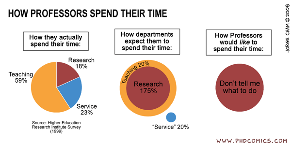

|
|
Page Web de Aziz-Alaoui M.A.
English version available
HERE
 CODEFLASH
CODEFLASH
|
Centres d'intérêt en Recherche
Mes intérêts de recherche sont axés sur la modélisation et l'analyse mathématiques de dynamiques
déterministes (temporelles et spatio-temporelles), avec un accent particulier sur les systèmes
et réseaux complexes :
- Systèmes Dynamiques : Dynamique Non-linéaire,
Bifurcations, Chaos, Contrôle du Chaos et Synchronisation (EDO ou EDR).
- EDP : Propriétés Qualitatives et Analyse Asymptotique d'Equations de Réaction-diffusion
(d'un point de vue systèmes dynamiques) et Modélisation de phénomènes non-linéaires en éco ou biologie, formation de patterns, théorie de la stabilité.
- Systèmes Complexes : Réseaux d'Interactions, Eco- ou Bio-Complexité,
Auto-organisation et Emergence ...
- Applications : Neuroscience,
Ecosystèmes (prédateurs-proies), épidémiologie, ...
-
Mon travail est financé par l'Université de Le Havre-Normandie,
le CNRS, l'ANR, Le CPER région Normandie, les fonds européens FEDER via différents projets (XTerM, ...), les PHC,
|
: Offre d'emplois, IGR, MC, post-doc, ...
-
Recrutement : Poste d'IGR (Ingénieur de Recherche),
ouvert à recrutement maintenant :
Docteur en mathématiques appliquées,
à l'aise en informatique.
Il s'agira d'abord d'un CDD de 1 an, avec forte possibilité de passer en CDI.
Le recrutement se fera sur le laboratoire de mathématiques appliquées
du Havre (LMAH) et sur la structure Fédérative SFLOG (regroupant
les labos de maths, d'informatique et d'autres entités).
La personne recrutée devra s'intégrer aux équipes de recherche, porter des projets ...
tout en gérant aussi des problématiques plus techniques.
(Contact : aziz.alaoui@univ-lehavre.fr)
Voir ICI toutes les autres offres
-
--
Post-doc (ou ingénieur de recherche en : réseaux complexes d'EDP couplées,
systèmes dynamiques, théorique et numérique). Poste ouvert de suite (Octobre 2018), pour 09 à 12 mois CLOSED
- --
Advanced Research Position, un an : maintenant FERME', Closed
- --
Post-doc (ou ingénieur en systèmes dynamiques numériques), 6 mois, en 2014. Closed ICI.
- --
Post-doc (en mathématiques: principalement oscillateurs EDP couplées).
Closed. Voir ICI.
Ces offres de post-doc sont possibles en partie grâce à l'ANR, au soutien financier de
la Région Nomandie,
et l'état, au sein du CPER (Contrat Projet Etat Région).
Et du FEDER: Xterm ,
(Réseaux d'Intéractions et Systèmes Complexes), project FEDER (European Regional Development Fund)
sur les systèmes complexes et réseaux d'intéraction.
|
: Proposition de Sujet de Thèse
- Sujet : Systèmes Dynamiques non linéaires, Applications à des Problèmes
de réseaux d'Intéraction complexes en "neuroscience". (Ce sujet porte sur l'étude de systèmes dynamiques et l'analyse
asymptotique d'oscillateurs couplés basés sur des EDO et des EDP du type Hodgkin-Huxley).
Une allocation de recherche, pour 3 ans, est obtenue pour cette thèse.
Pour plus d'information, m'envoyer un courriel (aziz.alaoui@univ-lehavre.fr).
Diplôme requis : master-2 de MATHEMATIQUES.
Attribuée, Closed
- ...
|
News : Quelques Conférences Récentes ou à Venir
- Not updated
-
-
M2ISDA'2027 :
https://m2isda.com/
M2ISDA, Modélisation mathématique et innovations en sciences des données avancées,
Januaray 19-21, 2027, Université de Djibouti.
-
ICAMAI'2026 :
https://icamai26.sciencesconf.org/
ICAMAI'26,
3rd International Congress on Applied Mathematics and Artificial Intelligence,
Faculty of Sciences Fès, Morocco
-
DySyX'2025 :
https://dysyx2025.sciencesconf.org/
Workshop on Advance in Nonlinear Dynamical Systems, Complex Networks and Applications :
DySyX’2025, May 22-24, 2025, Faculty of Sciences Kénitra, Morocco
-
MCDSA'2024 :
https://sites.google.com/view/mcdsa2024/
International Conference: Marrakech Conference on Dynamical Systems and Applications (MCDSA 2024) :
03 - 06 September 2024, Marrakech, Morocco.
-
-
-
DySyX'2022 :
https://bit.ly/dysyx2022
Workshop on Advance in Nonlinear Dynamical Systems, Complex Networks and Applications :
DySyX’2022, May 12, 2022, Faculty of Sciences Kénitra, Morocco
-
BDD'2021 :
http://lmah.univ-lehavre.fr/~ambrosio/BDD2020.html
10th workshop on Dynamical Systems with Applications to Biolog:
e-Workshop Bio Dynamics Days ' 2020 : May 27 - July 1st, 2021.
((
Due to the COVID-19 Pandemic, the workshop, which was to be held
at Le Havre Normandie University has moved online :
The workshop will be held remotely during the month of June.
To avoid fatigue, it will consist in a series of 2 talks, delivered
every Thursday, 03 p.m. - 05 p.m. GMT.
To register (it's free), send an email to me, or to my co-organizer, you will receive an invitation
on Zoom to attend the meeting a
couple of hours before it starts.))
-
BDD'2020 :
http://lmah.univ-lehavre.fr/~ambrosio/BDD2020.html
10th workshop on Dynamical Systems with Applications to Biolog:
e-Workshop Bio Dynamics Days ' 2020 : June 04 - June 25, 2020.
-
DSTA'2019 :
https://www.dys-ta.com/
15th INTERNATIONAL CONFERENCE
Dynamical Systems
Theory and Applications,
December 2-5, 2019, Łódź, POLAND
-
XTerM'2019 :
https://xterm2019.sciencesconf.org/
: systèmes compleXes, intelligence Territoriale et Mobilité,
Conférence internationale,
26-28 juin 2019 Le Havre (France)
-
SFBT'2019 :
http://www-math.sp2mi.univ-poitiers.fr/SFBT2019/fr/index.shtml
39ème Colloque de la Société Francophone de Biologie Théorique,
24-27 Juin, 2019, Poitiers, France
-
ICRAMCS'2019 :
https://icramcs2019.sciencesconf.org/
1st International Conference on Research in Applied Mathematics and Computer Science
29-30 mars 2019, Casablanca, Maroc
-
JIM'2019 :
https://sites.google.com/view/jim-2019/accueil
1ère édition de la Journée Internationale des Mathématiques
27 mars 2019, EHTP Casablanca, Maroc
-
PCFM'2018 :
http://pcfm-ma.iecl.univ-lorraine.fr/conferenciers
PREMIER CONGRÈS FRANCO-MAROCAIN DE MATHÉMATIQUES APPLIQUÉES,
16 - 20 avril 2018, Marrakech, Maroc
-
MADEV'2017 :
http://madev17.univ-perp.fr/index.html
Conférence Internationale : Mathématiques Appliquées à des questions de DEVeloppement.
Académie Hassan II des Sciences et Techniques,
16-19 octobre 2017, Rabat, Maroc
-
WANCSA'2017 :
http://lmah.univ-lehavre.fr/~alaoui/WANCSA/WANCSA-2017.html
Workshop on Advance in Nonlinear Complex Systems and Applications
(WANCSA'2017 ),
4-5 Juillet, 2017, Le Havre, Normandie, France
-
SFBT'2017 :
http://www-math.sp2mi.univ-poitiers.fr/SFBT2017/fr/
37ème Colloque de la Société Francophone de Biologie Théorique (SFBT),
28-29 Juin, 2017, Poitiers, France
-
SM2A'2017 :
https://sm2ameknes.sciencesconf.org/
5ème Congrès international de la Société Marocaine de Mathématiques Appliquées (SM²A),
16-18 mars, 2017, Meknès, Maroc
-
ICCSA'2014 : :
http://iccsa2014.univ-lehavre.fr/.
The 4th International Conference on Complex Systems and Applications,
June 23-26, 2014,
University of Le Havre, Normandie, France.
-
ICCSA'2009 : :
The 3rd International Conference on Complex Systems and Applications,
june 29 - July 02, 2009, University of Le Havre, Normandie, France.
|
D'autres Actualités
- Séminaire du LMAH : ICI
-
-
- Janvier 2021 : début stage Post-doc de K.Khalil, ANR,
Systemes dynamiques du LMAH
- Janvier 2019 : début stage Post-doc de P.Roy au sein de l'ISCN, groupe
Systemes-Complexes du LMAH
- Septembre 2018 : début stage Post-doc de Y.Liao au sein de l'ISCN, groupe
Systemes-Complexes du LMAH
- 15 janvier 2013 : début stage Post-doc de Y.Zhang au sein de l'ISCN, groupe
Systemes-Complexes du LMAH/LITIS/ISCN
- 20 dec 2013 : fin du stage Post-doc de Q(J).Zhang au sein du LMAH, équipe
Systemes-Dynamiques LMAH/LITIS/ISCN
- 01 Mars 2012 L'équipe Math-Bio du LMAH a recruté pour 6 mois
Maciej KRUPA (soutien du FEDER-RISC)
- 15 janvier 2012 : fin du stage Post-doc de ZHAO Junchan au sein de l'équipe
Systemes-Dynamiques-Math-bio du LMAH/LITIS-ISCN
|
Proposition de Stages de Master 2 Recherche
- Sujet 1 : Traveling Waves, théorie et applications
- Sujet 2 : ...
|
Informations générales
- Des informations sur le Master de Math se trouvent
ici
- Cycle de mini-conférences L'essentiel en 29mn
ici
|
Comment les enseignants-chercheurs passent leur temps ?

|

 Adresse :
M.A. Aziz Alaoui,
LMAH,
FR-CNRS-3335,
Université du Havre Normandie,
25 Rue Ph. Lebon, BP:540,
76058 Le Havre Cedex, (Normandie) France.
Adresse :
M.A. Aziz Alaoui,
LMAH,
FR-CNRS-3335,
Université du Havre Normandie,
25 Rue Ph. Lebon, BP:540,
76058 Le Havre Cedex, (Normandie) France.